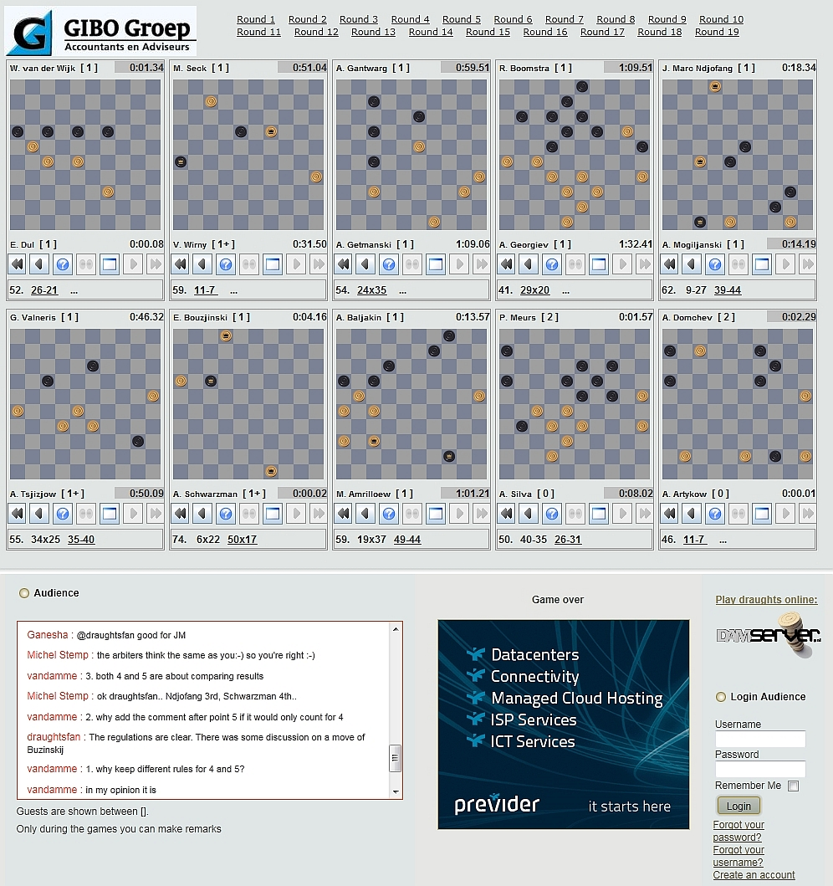

Gibo World Championship Draughts 2011
The Netherlands, Emmeloord and Urk, 7-28 May 2011
Главная
Игры live
Keuze menu (Java)
Partijen met live analyse
Alle partijen (Java)
Alle partijen (Oerterp)
ЧМ2011
Результаты
Популярные игры
Analyses H. Meyer
Analyses G. Boom
Analyses W. Wesselink
Таблица игроков
Программа
В прессе
Фотографии/Видео
Youtube
Foto's
Uitje Noordoost Polder
Open Kampioenschap Flevoland
Игра школьников в шашки в Урк
Игра школьников в шашки в NOP
Kloksimultaan Ndjofang
Пресс-конференция 16 декабря 2009
Информация
Участники турнира
Организаторы
Место проведения
Дополнительные мероприятия
Kloksimultaan Ton Sijbrands
Игра школьников в шашки в Урк
Игра в шашки по времени Ndjofang
Результаты
Партии
Фотографии
Programmaboekje
Допинговые правила
Officiële Toernooi Informatie
Игра в шашки
Чемпионы мира
Электронная шашечная доска
Computeranalysis technics
История шашек
Шашки links
Орг. по шашкам в Голландии
Форумы
Контакт
There are no translations available.
